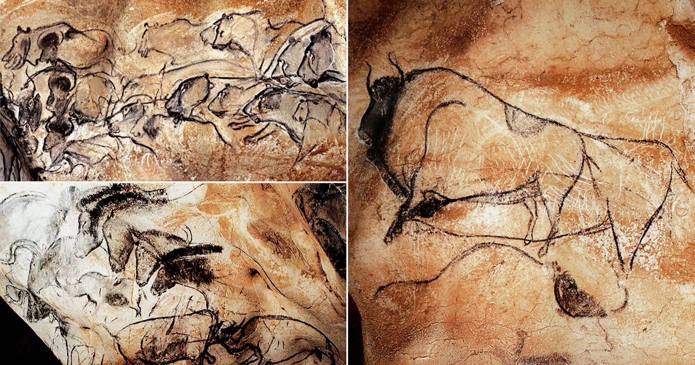
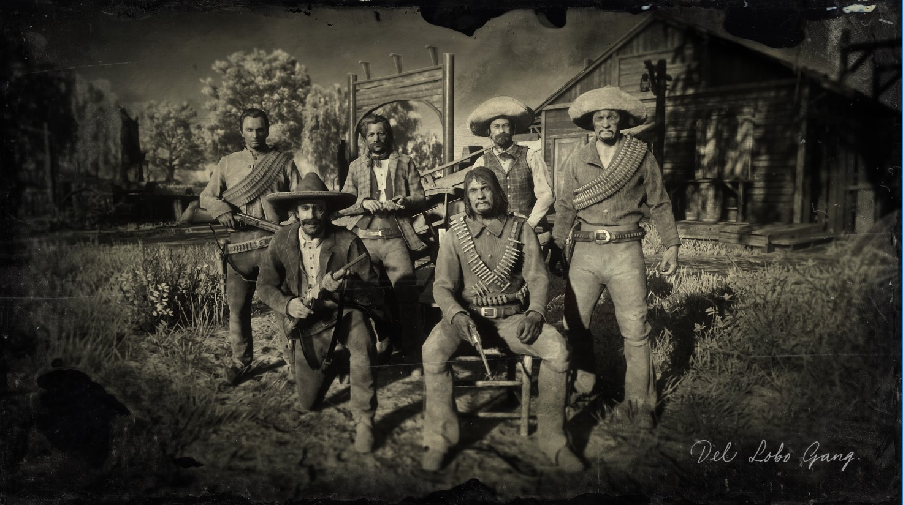
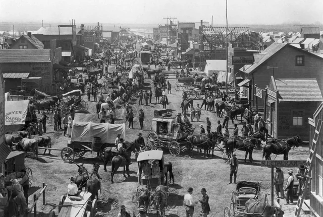
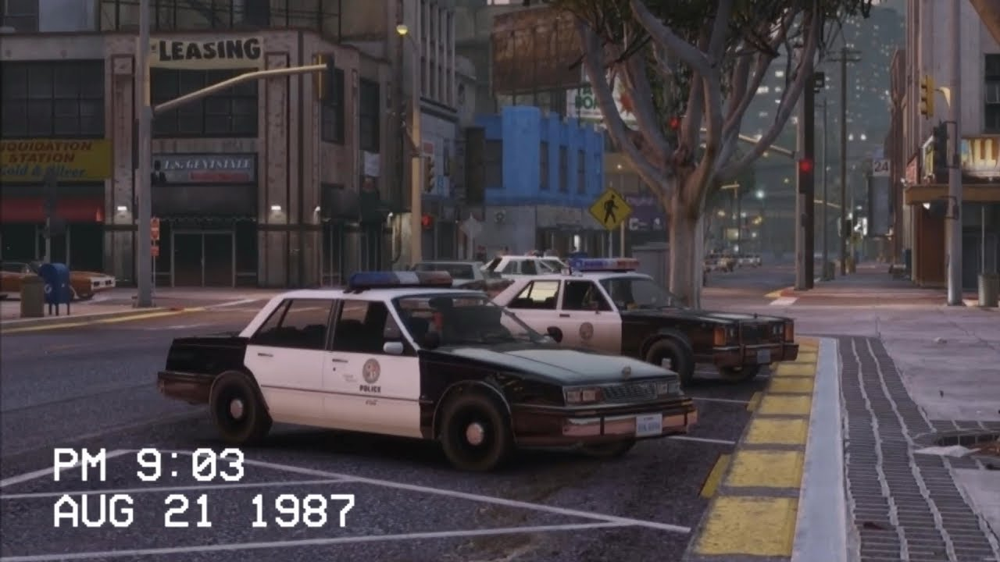

Území dnešního státu San Andreas bylo osídleno již před několika tisíci lety. Domorodé kmeny žily v souladu s drsnou přírodou – od pouští Bone County přes lesy Whetstone až po pobřeží. Uctívali přírodní síly, hory, řeky a údajně i záhadné entity, které nazývali „mimozenšťané“ (bytosti z jiných sfér, o kterých se dodnes vyprávějí legendy v zapadlých kmenech). Archeologické nálezy naznačují rituální místa v horách a skalní malby zobrazující podivné postavy v oválných objektech.


První Evropané – Španělé – dorazili do oblasti v 16. století. Hledali zlato a nové cesty. Hlavní město Los Santos bylo oficiálně založeno roku 1781 jako španělská osada. Velkou zásluhu na jeho vzniku měl španělský důstojník Jeffrey M. Gambrell, který vedl expedici, a mexický obchodník Juan B. Peterson, který měl kontakty na místní obyvatele a zajistil zásoby.
Po mexické válce za nezávislost (roku 1821) se celé území stalo součástí samostatného Mexika. San Andreas bylo řídce osídlené pohraniční území s ranči a haciendami.
Velká část archivů z této doby byla nenávratně ztracena při požáru historického archivu v Los Santos v roce 1992 během chaosu gangových válek. Zbytek dokumentů údajně úmyslně zničili zkorumpovaní policisté z jednotky C.R.A.S.H., zejména Frank Tenpenny.
Po americko-mexické válce (1846–1848) bylo území připojeno k USA. Roku 1850 založil dobrodruh Gary Jackson novou osadu na místě dnešního Los Santos a v okolí propukla zlatá horečka. Tisíce lidí proudily do státu.
V letech 1860–1870 vznikly první železnice, které propojily Los Santos se San Fierro a později i s Las Venturas. Železnice přinesly boom, ale také kriminalitu – přepadávání vlaků a obchodních karavan. Vznikly první outlawské gangy.

Po druhé světové válce se San Andreas rychle industrializovalo. Los Santos se stalo centrem filmového průmyslu, San Fierro technologickým a alternativním městem a Las Venturas městem hazardu.
80. a 90. léta přinesla temnou éru: války gangů (Grove Street Families, Ballas, Vagos, Varrios Los Aztecas), drogovou krizi a masivní policejní korupci (nejvýrazněji Frank Tenpenny, Eddie Pulaski a Jimmy Hernandez z C.R.A.S.H.).
Roku 1992 se do města vrátil Carl „CJ“ Johnson (po pěti letech v Liberty City). Po vraždě matky se společně s bratrem Seanem „Sweet“ Johnsonem, Big Smokem, Ryderem a dalšími pokusil obnovit moc Grove Street Families.
Ten samý rok zasáhlo Los Santos ničivé zemětřesení, které zničilo část infrastruktury a prohloubilo chaos.
21. století: Rozdělení státu a úpadek severu (2004–2013) Po zemětřesení 1992 se stát nikdy plně nezotavil. Jižní část (Los Santos a Blaine County) prosperovala díky federálním dotacím, filmovému průmyslu a ropnému boomu. Severní části – San Fierro a Las Venturas – však upadly do dlouhodobé krize.

V roce 2004, po letech politických sporů a ekonomických rozdílů mezi jihem a severem, byl schválen Zákon o reorganizaci státu San Andreas. Roku 2005 došlo k oficiálnímu rozdělení na dvě administrativní jednotky:
Jižní San Andreas (Southern San Andreas) – s hlavním městem Los Santos. Tato část si ponechala oficiální název „San Andreas“ a stala se tím, co známe z roku 2026.
Severní San Andreas (Northern San Andreas) – zahrnující San Fierro, Las Venturas, Bone County a Tierra Robada.
Pro obyvatele Los Santos jsou to „města na severu“, kam se létá letadlem, ale v praxi jsou pro běžný život nedostupné.